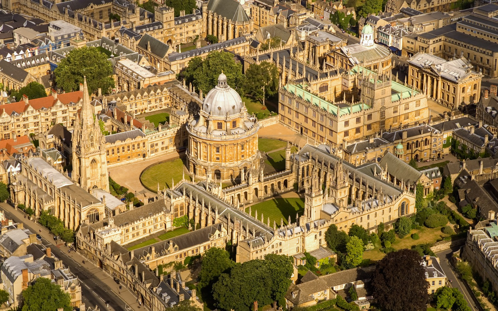
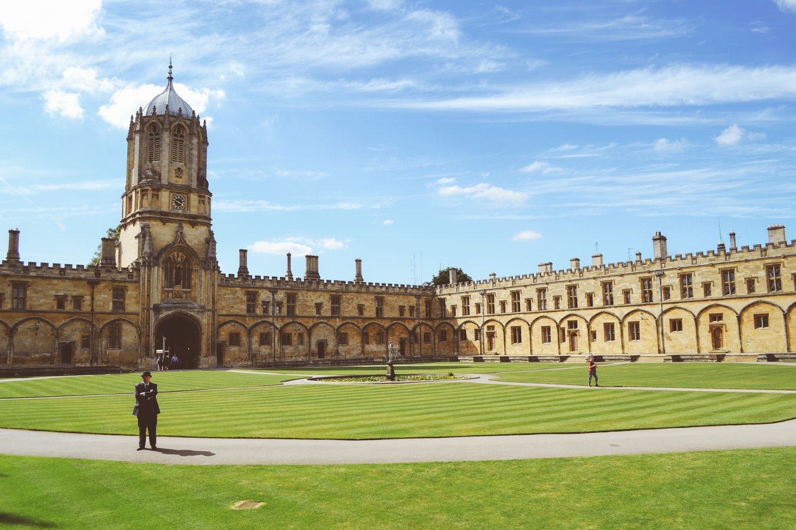

 
OXFORD UNIVERSITY
About:
The University of Oxford is not a campus university and our colleges, departments and other constituent units are to be found throughout the city of Oxford, rather than on one central site. Departmental and college addresses and phone numbers may be found on individual college and departmental websites.If you have a question you would like to ask, including admission queries, please use our “Any Questions” website. You can search popular questions or submit a question using the “Ask a question” tab. Unfortunately we are unable to respond to letters from individuals. If you have an issue or feedback relating to the University of Oxford website itself, please contact the webmaster.
History [edit]
The study of History at Oxford combines the examination of large regions over extended periods of time with more focused work on smaller groups, shorter periods and particular problems. It provides a distinctive education by developing an awareness of differing political, cultural, social and economic structures in past societies and their interrelationship. It combines vigorous debate over questions of interpretation with rigorous attention to the source materials. Its constant enrichment by cross-fertilisation from other disciplines leads to new questions about the past.
Campus Facilities[edit]
What is Facilities Management (FM)? Facilities Management provides services that enable the day to day running of buildings covering a diverse range of services all designed to deliver a safe, compliant, clean and efficient working environment with services that are flexible and adaptable to change. The Estates Services FM team offers advice and guidance to departments and has direct responsibility for the management of facilities in a number of University buildings.
Awards & Achievements[edit]
Professor Rose McGready, Professor of Tropical Maternal and Child Health has been recognised for two awards: the Alumni Award for Service to Humanity by the University of Sydney – ‘in recognition of her personal contribution improving the lives of those in need.’ And she has been appointed as an Honorary International Fellow by the American Society of Tropical Medicine & Hygiene. This was awarded in recognition of outstanding accomplishment by an ‘individual not an American citizen who has made eminent contributions to some phase of tropical medicine and hygiene’. Find out more Dr Rachel Condry, Fellow of St Hilda's College and Associate Professor, Centre for Criminology, was awarded a prize for ‘excellence in impact’ and the overall 'Impact Champion prize' by O2RB, a partnership of four universities (Oxford, Reading, Oxford Brookes, and the Open University), for forging awareness and developing policy responses from her research on adolescent to parent violence (APV). Find out more Two Oxford chemists, Professor Tim Softley and Professor Graham Richards CBE, were among the exceptional scientists elected as new Fellows of the Royal Society. Professor Richards has also received the 2018 Richard J. Bolte Sr. Award from the US Science History Institute. Find out more Professor Kathryn Wood, Emeritus Professor of Immunology in the Nuffield Department of Surgical Sciences, has been honoured by The Transplantation Society for her lifetime contributions in the field of transplantation with its highest distinction, the Medawar Prize. Find out more Dr Nicky Farrer has received a L’Oreal Award for Women in Science in recognition of her research which targeted the delivery of anti-cancer drugs to improve the quality and length of life for cancer patients. Find out more Dr Jenny Tran, Rhodes Scholar and one of Forbes ’30 under 30’, won an award at the Asian Women of Achievement Awards this earlier year. Recognised for her work in chronic disease research and public health, Dr Tran was a joint winner in the Young Achievers category. Find out more Professor Tamsin Mather awarded Rosalind Franklin Award by Royal Society. The award was made on the basis of her achievements in the field of volcanology, her ability to communicate with the public and her imaginative proposal for raising the profile of women in STEM. Read more Professor Hugh Jenkyns elected Foreign Member of Academia Nazionale dei Lincei. Read more
« Previous Next »copyright © 2017 All right reserved: Akashian.com